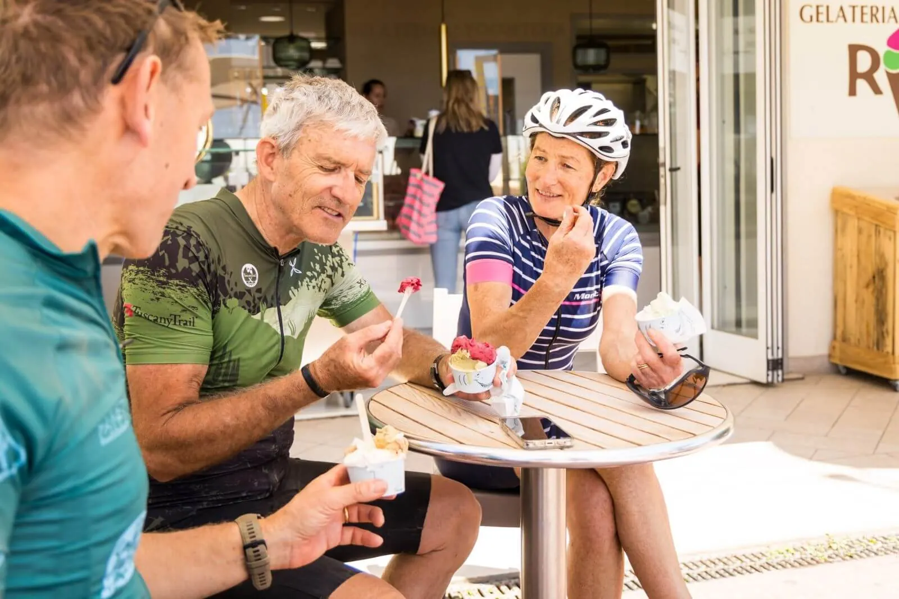
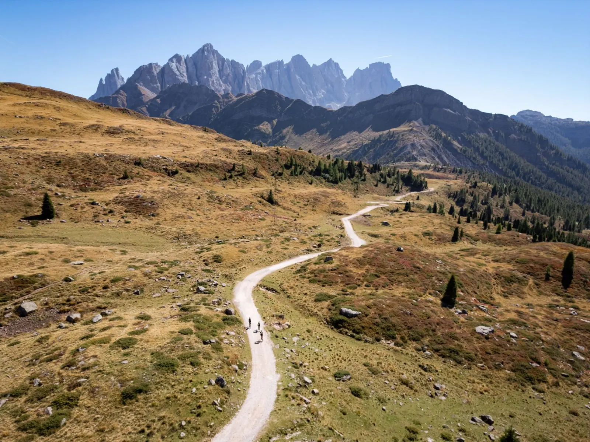
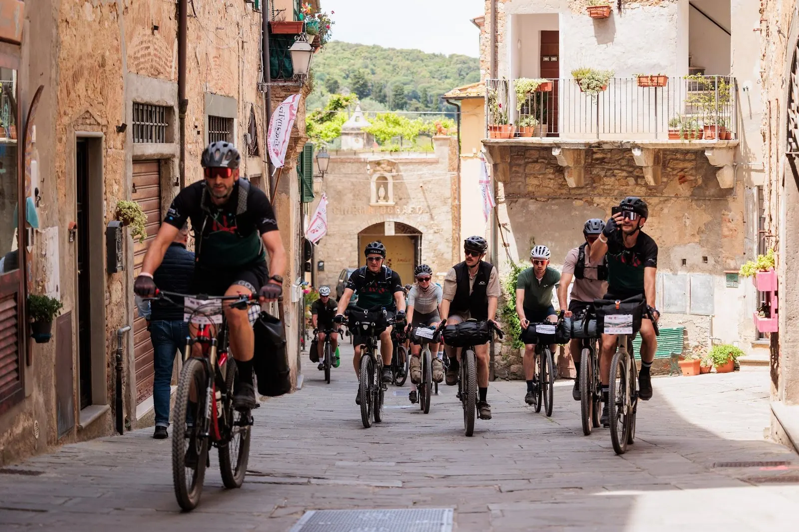
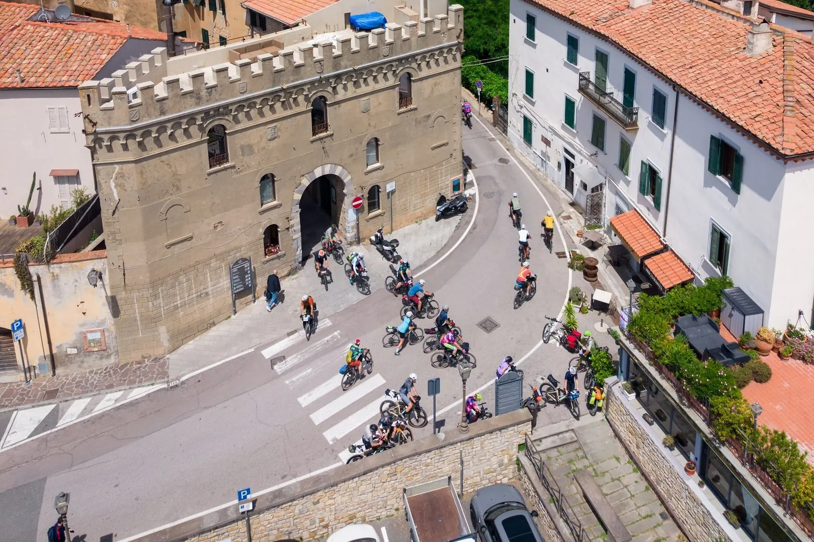

Perché questa guida
Ogni anno ci scrivono sindaci, assessori, direttori di APT, consorzi e uffici del turismo. La domanda è quasi sempre la stessa. Il cicloturismo conviene anche a noi?
È una domanda giusta, e merita una risposta seria. Dietro ci sono soldi, quasi sempre pubblici, mesi di lavoro e la firma di qualcuno che poi dovrà rendere conto della spesa.
Il cicloturismo è il nostro lavoro di tutti i giorni. Organizziamo il Tuscany Trail, l'evento bikepacking con più iscritti al mondo, oltre seimila nel 2026, e gli altri eventi della Bike Adventure Series, dalla Toscana a Capo Nord fino alla Patagonia. Sono diecimila partecipanti l'anno da 88 paesi. Abbiamo lavorato con gli uffici del turismo di capitali come Berlino, Copenaghen e Stoccolma, con regioni, parchi nazionali e comuni di poche migliaia di abitanti.
Prima di tutto, da dove vengono i nostri numeri
Sui cicloturisti abbiamo più dati del rapporto nazionale
oltre 7.000 questionari compilati dai nostri partecipanti negli ultimi due anni
Isnart e Legambiente, Viaggiare con la bici 2026, nota metodologica a p. 5. AdventureLab, archivio delle iscrizioni 2023-2026 e dei questionari, ottobre 2026.
Il rapporto Isnart e Legambiente è il riferimento nazionale e fa un lavoro prezioso. Per il 2026 ha intervistato oltre 30.000 turisti in Italia, e quelli in viaggio soprattutto per andare in bicicletta sono, testualmente, «oltre 2mila casi». Di chi viaggia in bici noi conosciamo provenienza, età e viaggio di quasi ventimila persone, e negli ultimi due anni abbiamo raccolto più di settemila loro questionari. È da qui che nasce questa guida.
Dentro ci sono le sette cose che vorremmo sapesse chiunque governi o promuova un territorio, prima di mettere un euro nel cicloturismo. Non è un catalogo e non è una brochure. Alcune faranno piacere, altre meno.
Il cicloturismo non è per tutti i territori. Ma quasi sempre, quello che serve, il territorio ce l'ha già.
Come leggerla
- Le prime due cose raccontano il mercato e chi lo compone. Le altre cinque sono quelle che separano un progetto che riempie i letti da uno che riempie un cassetto.
- Ogni numero ha la sua fonte accanto. Quando la fonte siamo noi, lo diciamo.
- In fondo ci sono dieci domande per capire da soli se il vostro territorio è pronto.
Le sette cose
Nell'ordine in cui le spiegheremmo seduti a un tavolo. Le prime due sono aperte a tutti.
La bassa stagione è il mercato del cicloturista
Quasi ogni territorio che incontriamo ha lo stesso problema. I turisti ci sono, ma arrivano tutti insieme, in due o tre mesi, e il resto dell'anno molte serrande restano abbassate.
Il cicloturista fa il contrario. In piena estate fa troppo caldo per pedalare tutto il giorno e le strade sono piene di traffico. I suoi mesi sono la primavera e l'autunno, proprio quelli in cui alberghi, agriturismi e ristoranti hanno più camere vuote e più tavoli liberi.
Lo vediamo nei nostri calendari. Il Tuscany Trail parte a maggio, il Trentino Gravel a fine settembre. Le date non sono un caso. Le scegliamo insieme ai territori, per riempire i mesi che servono a loro.
Un mese in più
Provate a fare un conto. Prendete tutte le strutture del vostro territorio e aggiungete a ciascuna un mese di lavoro in più all'anno, ad aprile o a ottobre. Quel mese, moltiplicato per ogni albergo, ogni bar, ogni negozio e ogni noleggio, è il valore del cicloturismo per voi. Dove c'è l'imposta di soggiorno, entra anche quella.
Quanto vale in Italia
Il rapporto nazionale di riferimento lo pubblicano Isnart e Legambiente con l'Osservatorio sull'Economia del Turismo delle Camere di commercio. L'ultima edizione, uscita nel 2026, fotografa il 2025.
Isnart e Legambiente, Viaggiare con la bici 2026, 6° Rapporto sul cicloturismo, dati 2025, pp. 6 e 11.
Il dato che conta di più è il confronto col 2019. Le presenze sono più o meno le stesse, ma la spesa è cresciuta di oltre un terzo. Il cicloturista non è diventato più numeroso, è diventato più prezioso.
I soldi restano in paese
Chi viaggia in bici si ferma spesso. Ogni trenta o quaranta chilometri cerca un bar, una fontana, un forno, una bottega. Non spende tutto in un albergo e non riparte in pullman. La spesa si distribuisce lungo la strada, anche nei paesi dove un turista in auto non si fermerebbe mai.
Sono soldi che passano davanti alle vostre porte. La domanda è se si fermano.

Il cicloturista di oggi non è quello che immaginate
Se chiudete gli occhi e pensate a un cicloturista, probabilmente vedete un uomo di mezza età con la bici stracarica e le borse laterali, sulla ciclabile lungo il fiume.
Quel cicloturista esiste ancora, ma non è più lui a muovere il mercato. Secondo il rapporto Isnart e Legambiente del 2026, quasi un cicloturista su due è una donna, il 47%, contro il 30% di un anno prima, e la generazione sotto i trent'anni è salita dal 9 al 17%. Viaggiano con il partner o con la famiglia più di sette su dieci.
E sono cambiate le bici. Oggi chi viaggia sceglie spesso una gravel, una bici a metà fra quella da corsa e la mountain bike, ci monta borse leggere da bikepacking e va dove l'asfalto finisce. Strade bianche, sterrati, vecchie strade di servizio che le auto hanno dimenticato.
Cosa ci dicono i nostri partecipanti
Al Tuscany Trail 2026, oltre seimila iscritti da 70 paesi, a fine viaggio abbiamo chiesto a tutti di raccontarcelo. Ecco chi sono.
AdventureLab, iscrizioni al Tuscany Trail 2026 e questionario di fine evento.
Per un territorio contano tre cose. Più di metà era alla sua prima esperienza di questo tipo, quindi il mercato si sta allargando. Sette su dieci hanno dormito in un letto pagato. E li porta il passaparola, che nessuna campagna pubblicitaria può comprare.
Una bici, due set di ruote
A settembre 2026 Decathlon, con il suo marchio Van Rysel, ha messo in vendita una bici gravel, la RCR-G The Ace, con due set di ruote nella scatola, uno per la strada e uno per lo sterrato. Si cambiano in pochi minuti, e la stessa bici passa dall'asfalto alla strada bianca.
Può sembrare un dettaglio da negozio di biciclette. È invece il segno di un cambiamento che riguarda chi governa un territorio. Per chi pedala oggi la differenza fra strada e sterrato non esiste più. Le vostre strade secondarie con poco traffico e le vostre strade bianche non sono due offerte diverse. Sono un'offerta sola.
Lo avevamo visto prima
Per noi non è una novità. Da anni vediamo le stesse persone arrivare a un nostro evento con le gomme tassellate per lo sterrato e al successivo con le gomme lisce da strada, sulla stessa bici. Se tre anni fa qualcuno ci avesse chiesto se una bici venduta con due set di ruote avrebbe funzionato, avremmo risposto di sì.
Ed è così che da tempo disegniamo i nostri itinerari e la nostra offerta cicloturistica. Percorsi che passano dalla strada allo sterrato nella stessa giornata, pensati per chi ha una bici sola e la usa per tutto. Già nel dicembre 2023, in un documento per un ente del turismo, scrivevamo che al posto dell'uomo con le borse laterali «adesso invece viene in mente la giovane ragazza in sella a una gravel bike con sopra delle borse da bikepacking».
Perché vediamo le cose prima
Non è intuito. È il nostro lavoro di tutti i giorni. Parliamo con i nostri partecipanti tutto l'anno, prima, durante e dopo ogni viaggio. Proponiamo di continuo nuovi prodotti cicloturistici, e sono loro a giudicarli, iscrivendosi oppure no.
Per questo sappiamo cosa funziona e, soprattutto, cosa non funziona. Prima che diventi una tendenza, e prima che un territorio ci investa sopra.
Quello che serve ce l'avete già
Quando un ente pensa al cicloturismo, la prima idea è quasi sempre un'opera. Una pista ciclabile, un ponte, un'area di sosta attrezzata, chilometri di cartellonistica. È anche l'idea più cara. E i cartelli invecchiano in fretta, mentre chi viaggia in bici oggi segue quasi sempre la traccia sul telefono o sul navigatore.
Già nel 2020 il rapporto Isnart e Legambiente stimava fra 30.000 e 170.000 euro il costo di un chilometro di pista ciclabile, più qualche migliaio di euro l'anno di manutenzione. Le ciclabili servono, soprattutto a chi in bicicletta va a scuola o al lavoro. Ma il cicloturista non viaggia per una ciclabile. Viaggia per un itinerario, e le ciclabili spesso sono soltanto dei collegamenti.
Noi lavoriamo con l'esistente
Sappiamo progettare anche le infrastrutture, e quando servono le progettiamo. Ma nella grande maggioranza dei casi non servono. Quasi ogni territorio ha già quello che cerca chi viaggia in bici. Strade secondarie con poco traffico, strade bianche, vecchie strade di servizio, borghi, fontane, un bar aperto la mattina presto.
Quello che manca, di solito, è qualcuno che metta tutto in ordine, scelga le strade giuste fra cento possibili e lo faccia sapere alle persone che devono venire.
Il territorio non va costruito. Va organizzato e promosso nel modo giusto.
Lo dimostrano i nostri eventi, che ogni anno portano migliaia di ciclisti da tutto il mondo su strade bianche e secondarie che c'erano già, senza che sia stato costruito un solo chilometro di pista ciclabile apposta per loro. E lo dice la bici con due set di ruote del capitolo precedente. Chi pedala oggi vuole passare dall'asfalto allo sterrato nella stessa giornata. Le vostre strade secondarie e le vostre strade bianche, messe insieme, sono già il prodotto.
Le grandi ciclovie sono autostrade
Le ciclovie nazionali e i grandi itinerari europei portano flussi importanti, ed è giusto che ci siano. Ma funzionano come le autostrade. Si passa e si va oltre. A un territorio che sta a qualche chilometro dalla ciclovia serve un'uscita, cioè un motivo per lasciarla e fermarsi una notte.

Un percorso da solo non porta nessuno
Ogni regione ha itinerari ciclabili segnati, con cartelli, mappe e tracce da scaricare. Molti sono stati pagati con fondi pubblici. Molti restano quasi vuoti.
Non è colpa delle strade. Nel 2023 lo scrivevamo così, realizzare un ottimo percorso non è sufficiente per invogliare i cicloturisti a percorrerlo. Un percorso ha bisogno di un motivo per partire. Una data, una storia, delle persone con cui condividere la strada. È quello che fa un evento.
Un evento senza classifica è un evento turistico
I nostri eventi non hanno classifiche né cronometri. Chi parte non corre, viaggia. Dorme sul territorio prima, durante e dopo, mangia nei ristoranti, compra nei negozi, e spesso arriva con qualcuno che lo accompagna. Prima di tutto è un evento turistico, poi un evento sportivo.
L'onda lunga
Un evento così non crea un picco breve e violento. Crea un'onda lunga.
- Chi ha pedalato torna, spesso con la famiglia, in un altro periodo dell'anno.
- Chi ha visto le foto rifà il percorso per conto suo.
- Le tracce restano al territorio e continuano a lavorare.
- Le foto e i video dei partecipanti girano per anni, in decine di lingue, sui canali di chi sceglie dove andare in bicicletta.
Il caso Trentino
Insieme al Trentino abbiamo prima costruito il prodotto gravel del territorio, poi lo abbiamo acceso con un evento. Il Trentino Gravel 2026, alla prima edizione, è andato esaurito in 22 minuti dall'apertura delle iscrizioni. A fine settembre ha portato quasi 2.000 pernottamenti in 41 località trentine, e i partecipanti lo hanno votato 9 su 10.
Per ogni data e per ogni percorso c'è posto per un solo territorio.
Un territorio piccolo può battere uno famoso
Molti amministratori di comuni piccoli pensano che il cicloturismo sia una partita per le mete famose. Succede il contrario.
Chi viaggia in bici cerca strade vuote, silenzio, paesi dove il bar è ancora il bar. L'isolamento che per altri turismi è un limite, per lui è il motivo del viaggio.
Il valore di un posto vero
Soprattutto, cerca l'autenticità. Un posto meno turistico è un posto vero. Il bar dove la mattina si parla ancora in dialetto, la trattoria senza il menù in quattro lingue, la festa fatta per il paese e non per i visitatori, la signora che alla fontana riempie la borraccia a chi passa e gli chiede da dove viene. Chi pedala per giorni non cerca uno spettacolo allestito per i turisti. Cerca la vita di un luogo, e la ricorda per anni.
Le aree interne, i borghi di collina, le valli che si stanno spopolando hanno proprio quello che le mete famose hanno perso, e che nessun investimento può ricostruire. Per chi viaggia in bici essere meno conosciuti non è un difetto da correggere. È il motivo per cui vale la pena arrivare.
E un viaggio in bici attraversa tanti comuni. Il valore non si ferma nel capoluogo, si distribuisce lungo la strada, chilometro dopo chilometro, anche dove oggi di turisti se ne vedono pochi.
Dove mettiamo i nostri campi base
Al Tuscany Trail i campi base, dove i partecipanti si fermano a mangiare e a dormire, li mettiamo apposta in località secondarie e non nei centri già pieni di turisti. È lì che una notte in più fa la differenza.
Il caso Foreste Casentinesi
Dal 2022 Unpaved Roads porta ogni anno una tappa gravel nel Parco Nazionale delle Foreste Casentinesi, fra Toscana e Romagna. È diventato un appuntamento fisso, che nel 2026 ha richiamato ciclisti da 21 paesi in un territorio lontano dalle rotte del turismo di massa.
Lavoriamo con le capitali e con i comuni di poche migliaia di abitanti, con lo stesso metodo. Da Berlino e Copenaghen a Tarquinia e Monterotondo Marittimo.

I soldi si sprecano sempre negli stessi modi
In questi anni abbiamo visto molti progetti di cicloturismo partire con entusiasmo e spegnersi in silenzio. Gli errori si ripetono quasi identici da una regione all'altra. Li raccontiamo senza nomi, perché non servono.
- La foto sbagliata. Una regione ha presentato dodici itinerari con in copertina una bici da supermercato, per un giro di 58 chilometri e quasi 1.500 metri di dislivello. Un sito del turismo mostrava un ciclista in scarpe da ginnastica. Chi pedala davvero se ne accorge in un secondo, e chiude la pagina.
- Promuovere un nome invece di un viaggio. Una regione ha comprato una pagina su un giornale tedesco con una bella foto e il suo nome, senza un luogo, un percorso o una data. Il cicloturista non compra una regione. Compra un itinerario o un evento.
- Il catalogo. Dodici percorsi, trenta tracce, cento punti d'interesse. Più scelta si dà, meno si sceglie. Ne servono pochi, quelli giusti per le notti che volete riempire.
- Le tracce prima della strategia. Prima si decide chi deve arrivare, quante notti deve restare e in quali mesi. Solo dopo si disegnano i percorsi. Al contrario si ottengono tracce belle che non portano nessuno.
- L'opera prima del pubblico. Costruire prima di sapere chi la userà è il modo più caro di sbagliare.
- Lasciare tutto alla buona volontà. Le associazioni fanno un lavoro prezioso, ma un settore che in Italia vale miliardi di euro non si regge solo sul volontariato. Senza un piano commerciale, un progetto muore il giorno in cui finiscono i fondi.
- Gli esperti improvvisati. Gli esperti di cicloturismo stanno nascendo come funghi dopo un temporale. Prima di affidare un incarico chiedete quante persone hanno portato su un territorio, e chiedete di vederle contate.
- Contare i like. Visualizzazioni e cuori non pagano l'imposta di soggiorno. Un progetto si misura in presenze e pernottamenti, località per località.
Nessuno di questi errori dipende dal budget. Dipendono tutti da chi guida il progetto.
Se non lo contate, non è successo
Prima o poi qualcuno, in giunta o in consiglio, chiederà che cosa è tornato al territorio. Un progetto che non sa rispondere ha fallito, anche se è andato bene.
Le medie nazionali aiutano a capire il mercato, ma non bastano a un ente. Il rapporto nazionale intervista turisti che si fermano almeno due notti, in tre periodi dell'anno, primavera, estate e vacanze di Natale. Le gite di un giorno restano fuori, e l'autunno, quando si tengono molti eventi in bici, non è fra i periodi rilevati. Soprattutto, una media italiana non dice che cosa è successo nel vostro comune.
Un evento con iscrizione nominale si conta invece persona per persona. Sappiamo chi arriva, da quale paese, in quali giorni, e con il questionario di fine evento dove ha dormito e come si è trovato.
Cosa deve contenere una relazione seria
- Presenze e pernottamenti, località per località.
- Provenienza, paese per paese.
- Permanenza e accompagnatori.
- Spesa stimata, con una fonte esterna dichiarata.
- Gradimento e voglia di tornare.
- Visibilità vera, quella che si può verificare.
A fine evento noi consegniamo questo. Un documento da portare in giunta o in consiglio.
Il caso Campiglia Marittima
Il Comune di Campiglia Marittima ospita partenza, village e arrivo del Tuscany Trail con un affidamento per tre edizioni, dal 2025 al 2027. Nel 2026 gli iscritti sono stati oltre seimila da 70 paesi, due su tre dall'estero, e dormono sul territorio almeno una notte, spesso due, molti con chi li accompagna.
Decidere su evidenze, non su percezioni.

Il vostro territorio è pronto?
Il cicloturismo non è per tutti i territori, e preferiamo dirlo subito. Queste dieci domande servono a capire se il vostro lo è.
- Avete strade secondarie con poco traffico o strade bianche che si possono collegare in un viaggio di più giorni?
- Ci sono letti aperti in primavera e in autunno, non solo d'estate?
- Si arriva in treno, o da un aeroporto internazionale, in poche ore?
- Lungo la strada ci sono bar, forni, alimentari e fontane aperti la mattina?
- Sapete chi volete far arrivare, e da quali paesi?
- Sapete quanti cicloturisti arrivano oggi, e in quali mesi?
- Gli operatori sono pronti ad accogliere chi arriva in bici, con un posto sicuro per la bici e la colazione presto?
- C'è un ente disposto a misurare presenze e pernottamenti, e non i like?
- C'è la possibilità di programmare su più anni, e non su una sola stagione?
- C'è una persona che decide, e non dieci tavoli che si rimandano la decisione?
Se avete risposto sì a quasi tutte, il vostro territorio ha le carte per lavorare con chi viaggia in bici. Se i no sono tanti, non vuol dire che sia impossibile. Vuol dire che conviene capire prima dove intervenire, e spendere dopo.
Il passo successivo
Se volete capire se il vostro territorio ha i numeri per un evento o per un prodotto cicloturistico, candidatelo. Bastano due minuti. Se c'è una strada percorribile fissiamo una call, se non c'è ve lo diciamo.
Chi siamo
AdventureLab progetta il turismo in bicicletta per enti e territori e cura le partnership della Bike Adventure Series, la serie del Tuscany Trail, del NorthCape4000 e del Trentino Gravel. Diecimila partecipanti l'anno da 88 paesi, oltre 25.000 partecipanti solo nelle ultime tre stagioni.
- Capitali e città d'EuropaBerlino, Copenaghen, Stoccolma, Oslo, Helsinki, Varsavia, Praga, Tallinn, Riga, Monaco di Baviera, Losanna, Rovaniemi
- Regioni ed enti del turismoRegione Toscana, Toscana Promozione Turistica, Trentino Marketing, Trentino Sviluppo, Visit Norway, APT Val di Sole
- Comuni, parchi e valliCampiglia Marittima, Monterotondo Marittimo, Tarquinia, Bormio, Parco Nazionale delle Foreste Casentinesi, Parco Nazionale Patagonia, Gällivare, Bastogne